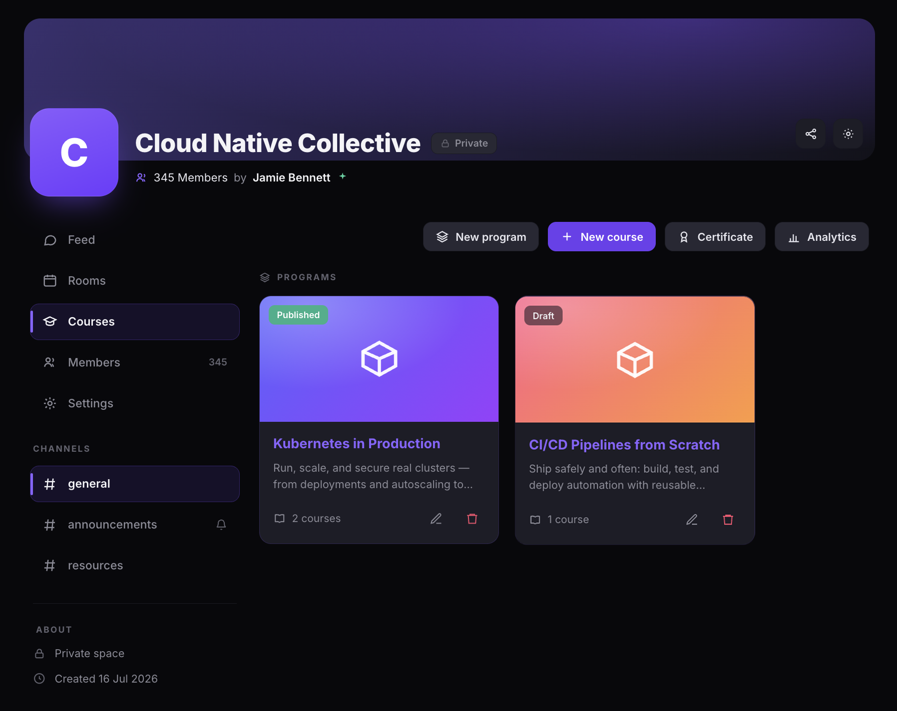
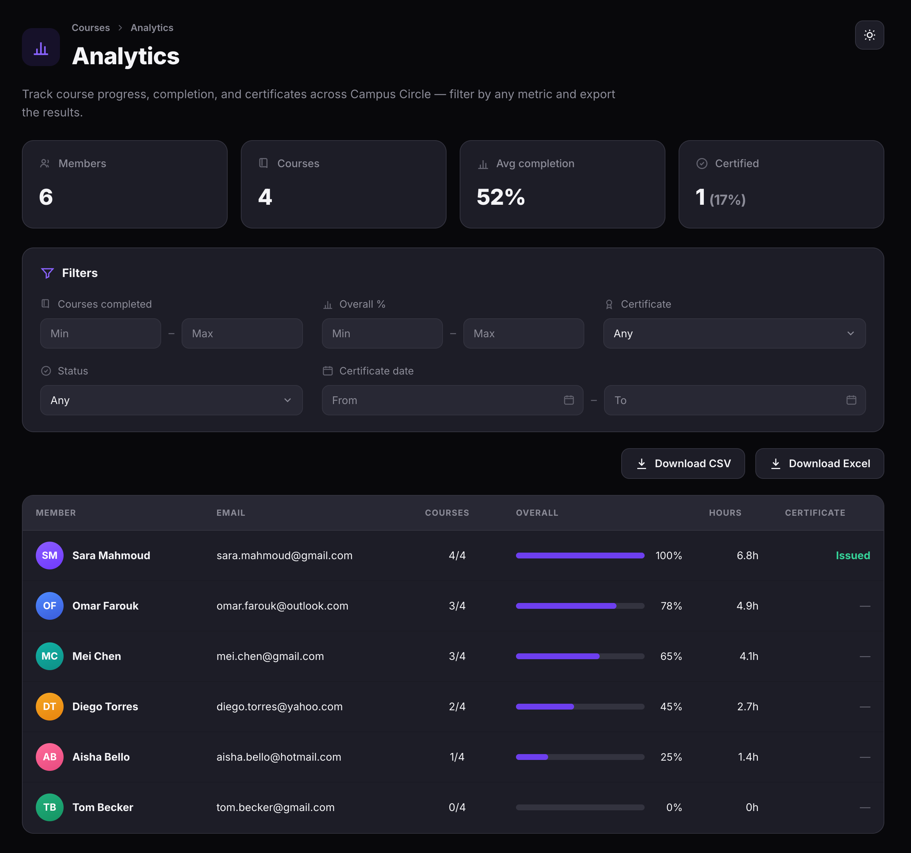
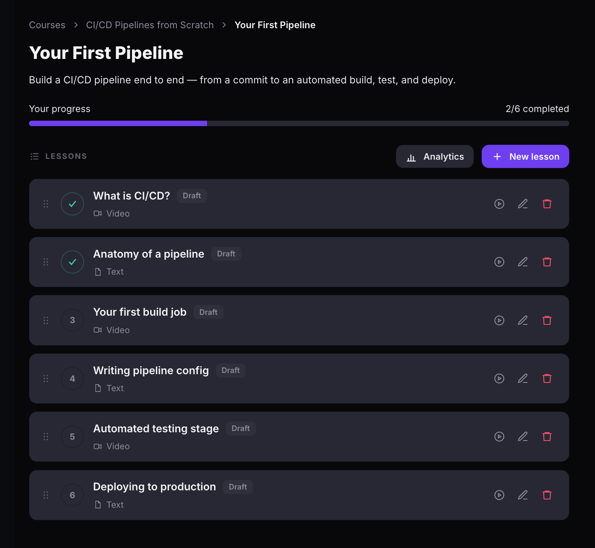
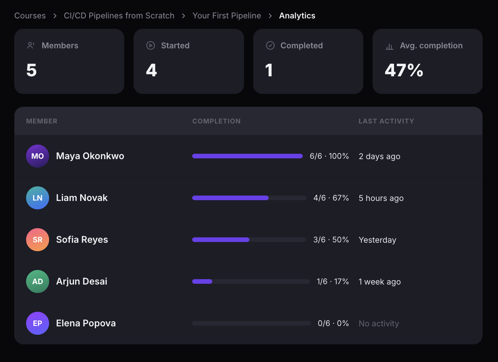

View course analytics
Track enrollment, completion rates, learning hours, and certification status across all your courses, or drill into a specific course to see individual learner progress. Export data as CSV or Excel for offline reporting.
Before you get started
- You must be a community admin.
- Your community must have the Courses tab visible. See Manage community navigation to enable it.
Access the all-courses analytics dashboard
- Open your community and click Courses in the left sidebar.
- Click Analytics in the top toolbar.

Read the all-courses analytics dashboard
The all-courses dashboard gives you a high-level view of learner activity across every course in the community. Four summary cards at the top show:
- Members — total number of enrolled learners.
- Courses — total number of courses in the community.
- Avg completion — the average completion percentage across all learners.
- Certified — the number and percentage of learners who earned a certificate.
Use the Filters section to narrow the member table by:
- Courses completed — set a minimum and maximum number of completed courses.
- Overall % — filter by overall completion percentage range.
- Certificate — filter by certificate status (Any, Issued, or Not issued).
- Status — filter by member status.
- Certificate date — filter by the date range a certificate was issued.
The member table shows each learner's name, email, number of courses completed, overall progress bar with percentage, total learning hours, and certificate status. Click Download CSV or Download Excel to export the data.

Access course-level analytics
- Open a course by clicking the course card.
- Click Analytics next to the + New lesson button.

Read the course-level analytics dashboard
The course-level dashboard shows learner progress for a single course. Four summary cards at the top show:
- Members — total number of learners enrolled in this course.
- Started — number of learners who began at least one lesson.
- Completed — number of learners who finished all lessons.
- Avg. completion — the average completion percentage across all enrolled learners.
The member table shows each learner's name, a completion progress bar with lessons completed out of total and percentage, and their last activity timestamp.
